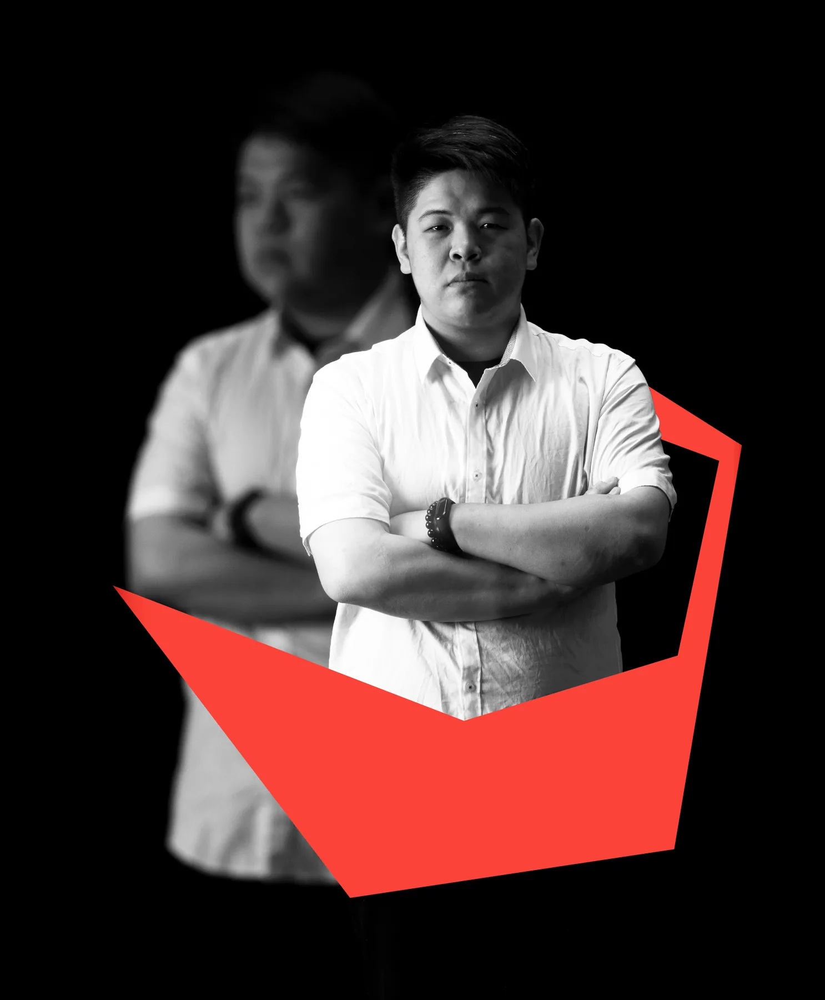

2020~
謝治成
Hsieh
Chih-Cheng
視覺設計、動態影像與 AI 視覺流程整合。具備新聞節目、電視牆、虛擬場景、商品與平面延伸設計經驗，能在高時效製作環境中穩定完成視覺內容。

自我介紹
關於我。
我是謝治成，具備視覺設計、動態影像與 AI 協作流程整合經驗。工作中主要負責新聞與節目相關視覺製作，包含電視牆、虛擬場景、動態 CG、平面視覺與專案延伸設計。
經歷
-
Jun. 2022 - May. 2026
TVBS 視覺設計相關職務
參與新聞與節目視覺製作，協助完成虛擬場景、電視牆、動態影像與即時專案需求，並依據內容特性快速調整設計方向。
-
Sep. 2019 - Jan. 2021
設計與視覺製作相關經驗
累積平面設計、視覺規劃與輸出製作經驗，熟悉從發想、設計到實際應用的完整流程。
學歷
- 2011 - 2015高職設計相關科系
- 2015 - 2019大學視覺設計相關科系
- 2019 - 2021研究所設計相關領域
專業技能
具平面設計基礎，專注資訊視覺化與動態影像設計，擅長畫面邏輯建構與內容整合，能在高時效環境下穩定產出；並透過生成式 AI 與自研工具重構設計流程，將製作時間縮短約 70%，具備跨部門協作與快速調整能力。
虛擬景、動畫作品
虛擬場景、電視牆與動態CG。
配合新聞與節目製作時程，完成虛擬場景、電視牆與動態 CG 設計，將資訊內容轉化為可快速理解、適合播出的視覺呈現。
商品設計作品與平面設計
商品、平面及3D延伸設計。
工作之外，我也持續承接設計案件，並將個人興趣延伸至商品開發與 3D 列印製作。作品涵蓋商品設計、DM 與平面延伸應用，從視覺規劃、印刷到販售皆有實際參與經驗；同時累積至少 5 年 3D 列印商品製作經驗，熟悉從建模、打樣到成品調整的流程。
- 傑作專案：課程推廣平面製作物設計
- 油系王卡牌：時事梗圖與卡牌語彙的二創商品
- Cosplay 道具：3D 列印、打磨到上色的完整製作
- 文創商品：以既有素材與 IP 印象延伸日常配件
AI 協作內容
AI 協作於視覺發想、圖像生成與製作流程實務。
將 AI 作為視覺發想與製作流程中的協作工具，協助完成概念提案、圖像生成、通路卡設計、動態輔助與 3D 視覺發想，讓設計流程更有效率，也能在短時間內探索更多可能性。
- 靜態輔助：用於通路卡、情境圖與視覺方向發想
- 3D 視覺：協助建立材質、造型與畫面風格參考
- Remotion動態輔助：支援片頭、配音與影像內容製作
- 網頁設計：運用 AI 協作完成作品集網站規劃、版面設計與前端製作